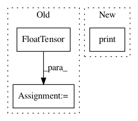

b1935c97fa1175908c579a4db06214174253f5f4,server/synthesizer.py,Synthesizer,tts,#Synthesizer#Any#Any#,173
Before Change
postnet_output, decoder_output, alignments, stop_tokens)
if self.pwgan:
vocoder_input = torch.FloatTensor(postnet_output.T).unsqueeze(0)
if self.use_cuda:
vocoder_input.cuda()
wav = self.pwgan.inference(vocoder_input, hop_size=self.ap.hop_length)
elif self.wavernn:
vocoder_input = None
if self.tts_config.model == "Tacotron":
vocoder_input = torch.FloatTensor(self.ap.out_linear_to_mel(linear_spec=postnet_output.T).T).T.unsqueeze(0)
After Change
process_time = time.time() - start_time
audio_time = len(wavs) / self.tts_config.audio["sample_rate"]
print(f" > Processing time: {process_time}")
print(f" > Real-time factor: {process_time / audio_time}")
return out
In pattern: SUPERPATTERN
Frequency: 3
Non-data size: 3
Instances
Project Name: mozilla/TTS
Commit Name: b1935c97fa1175908c579a4db06214174253f5f4
Time: 2020-06-26
Author: erogol@hotmail.com
File Name: server/synthesizer.py
Class Name: Synthesizer
Method Name: tts
Project Name: rusty1s/pytorch_geometric
Commit Name: bbf7f4e4b8462c18cad91529dad6d86c3945c776
Time: 2017-10-23
Author: matthias.fey@tu-dortmund.de
File Name: torch_geometric/nn/functional/spline_gcn_test.py
Class Name: SplineGcnTest
Method Name: test_edgewise_spline_gcn_backward
Project Name: rusty1s/pytorch_geometric
Commit Name: cce8409beb4c1b662de2b9635cd723993184be23
Time: 2017-11-10
Author: matthias.fey@tu-dortmund.de
File Name: torch_geometric/datasets/utils/faust_monet.py
Class Name:
Method Name: